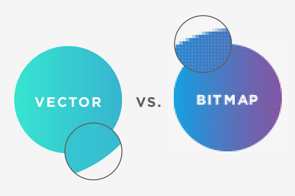

Photoshop
Photoshop er et billedebehandlingsprogram udviklede og udgivet af Adobe, med til formål at kunne behandle/manipluere med billeder eller grafik. I photoshop arbejder man med det man kalder for bitmaps som er et stort gitter af pixels. Pixels er små firkanter som indeholder data af farver.
Problemet med at arbejde med billeder i photoshop er at pixels kan kun indeholde en vis mænde af data og hvis det er man forstørre et billede så kan der ikke komme mere data. Hvis man gør det så kommer der det man vil kalde for pixelering som i sin simplehed betyder at ens billeder bliver pixeleret altså man kan begynde at se disse pixels.
Photoshop's tool bar
Photoshop's tool bar er lokaliseret til venstre side af photshop appen og indeholdr de fleste værktøjer du kommer til at benytte dig af inden for foto redigering.
Pohtoshop's toolbar
Photoshop tools layout

Lad os kigge på, hvordan photoshop’s toolbar er organiseret. Selvom værktøjerne virker som om de er tilfældigt placeret, så er der en form for logik bag det, hvor værktøjer der minder om hinanden er placeret sammen. I toppen har vi photoshop’s move & selection tools, hvorefter har vi crop og slice værktøjerne. Efter dem har vi measurement værktøjet og derefter photoshops reouching & painting værktøjet. Til Sidst har vi så drawing & type værktøjerne og nederst har vi navigation værktøjet
En opsummering af photoshop's tools
Så nu, hvor vi har lært om hvordan photoshops toolbar er organiseret, så lad os tage et kig på, hvad nogle af de vigtigste værktøjer gør. Her under er der en opremsning af de vigtigste af værktøjerne fra photoshop’s toolbar som vi lærte om, og en forklaring til hvert værktøjs egenskab.
Move & Selection tools
Move tool
Move tool er brugt til at flytte lag, selektioner og guidelines i et photoshop dokument. Du kan aktivere “Auto-Select” så du automatisk vælger det lag eller group, som du har klikket på.
Artboard tool
Artboard tool tillader dig at arbejde på mere end et artboard - som f.eks. at kunne designe flere layouts i forskellige størrelser.
Rectangular Marquee Tool
Rectangular Marquee tool tegner outlines i firkanter. Tryk og hold shift nede imens du tegner din selektion.
Elliptical marquee Tool
Elliptical Marquee tool gør det samme som ovennævnte blot det tegnes i en cirkel/oval i stedet for.
Lasso tool
Med Lasso tool kan du frit tegne en selektion omkring et objekt
Polygonal lasso tool
Med Polygonal lasso tool kan du klikke dig rundt omkring et objekt for at lave en polygonal selection outline.
Magnetic lasso tool
Magnetic lasso tool gør, at du “låser” din selektion omkring et objekts hjørner, imens du bevæger musen omkring dit objekt.
Object selection tool
Dette værktøj lader dig vælge et objekt, og photoshop laver en grov outline omkring det.
Quick Selection Tool
Dette værktøj lader dig hurtigt vælge et objekt, ved at lade dig male med en pensel over det objekt, du vil bruge. Du kan aktivere “Auto-enhance” i options menuen for bedre kvalitets selektioner.
Crop & Slice tools
Crop tool
Brug crop tool til at croppe et billeder og fjerne et uønsket område i dit billede.
Perspective crop tool
Dette værktøj tillader dig at rette et billedes perspektiv.
Measurement tools
Color sample tool
Color sampler lader dig tage en farveværdi fra et billede. Du kan “sample” op til 4 steder i et billede.
Retouching & Painting tools
Spot healing tool
Spot healing brush fjerner hurtigt små problemer i dit billede, f.eks. uønskede bumser, rynker osv.
Healing brush tool
Dette værktøj lader dig reparere større problemer i dit billede ved simpelt at male over dem. Hold alt (win)/option (mac) og klik for at sample et godt område fra dit billede og derefter male over dit problem for at fixe det.
Content aware tool
Brug content-aware move tool til at vælge og flytte dele af et billede til et andet område. Photoshop fylder automatisk hullet ud med elementer fra det nærmest område.
Brush tool
Dette pensel værktøj er det primære malerværktøj og kan enten bruges til at male på et lag eller en layer mask.
Clone stamp Tool
Dette tool er et af photoshops grundlæggende retouching tools. Det sampler pixels fra et område i dit billede og kloner de samme pixels i et andet område i dit billede.
Eraser Tool
Eraser Tool i photoshop fjerner simpelt, de pixel du maler over i dit valgte lag
Gradient tool
Photoshop's gradient tool lader dig mixe op til flere farver sammen, hvor farverne mindskes på forskellige måder, afhængig af hvilken gradient tool man har valgt.
Drawing & type tools
Pen tool
Photoshop's Pen Tool tillader dig at tegne præcise paths, vector shapes eller selektioner.
Freeform Pen Tool
Freeform Pen Tool tillader dig at frihånds tegne paths eller shapes. Det tillader dig også at tilføje dine egne anchor points, mens du tegner.
Horizontal Type Tool
Simpelt også kaldt for type tool i photoshop og tillader dig at tilføje standardtekst til dit dokument.